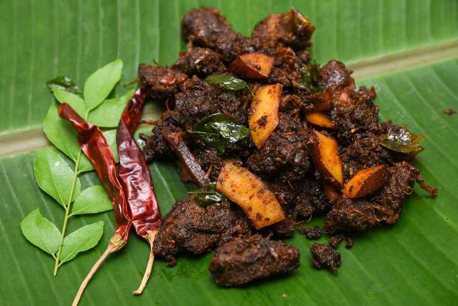

Kerala Beef Fry

Kerala Beef Fry is a classic South Indian dish made with a few simple spices, coconut slices, and curry leaves.
It's pressure cooked then lightly fried in coconut oil.
Indredients
- ½ lb beef
- 25 shallots (thinly sliced)
- 2-3 green chilies (slit)
- 1 tbsp ginger garlic paste
- ¼ tbsp turmeric powder
- 1 tbsp red chili powder
- 1½ tbsp coriander powder
- 2 tbsp pepper powder
- 1 tsp meat masala
- ½ tsp garam masala
- 4-6 sprigs curry leaves
- ¼ cup coconut bites
- a pinch of mustard seeds
- salt (as required)
- oil (as required)
Instructions
- Clean and cut beef into cube shaped pieces (preferably soup cut).
- Cook the beef in a pressure cooker with salt, pepper powder, meat masala, and a little water just enough to cover the meat. Pressure cook for 2 whistles and then remove the cooker from the flame.
Allow it to rest until the pressure goes off. Keep aside.
- Heat oil in a pan and splutter mustard seeds. Add curry leaves, sliced shallots, green chilies, and a little salt. Saute until the onions turn translucent.
- Add ginger garlic paste, saute for a minute until the smell resides.
- Add spice powders; chili, coriander, turmeric, garam masala, and mix well. Make sure to turn the heat to a low while adding the spice powders, so that it does not burn.
- Remove the lid from the pressure cooker and transfer the cooked beef with the remaining water to the pan, mix well with the masala and cook on a medium flame until the gravy dries out. Stir the gravy occasionally while cooking,
to prevent it from sticking to the bottom of the pan. Add salt as needed.
- Meanwhile, heat a little oil in another pan and fry the coconut bites. As it starts to brown, add curry leaves and fry it along with the coconut bites until browned. Keep aside.
- When the gravy dries out, reduce the flame to a low and saute the beef in the pan for 10-15 minutes. Add the fried curry leaves and coconut bites, and mix well together. Scrape the sides of the pan,
toss until the meat is brown -black and dried out completely.
- Serve hot with Rice, Porotta, Appam, Naan, or any other bread.